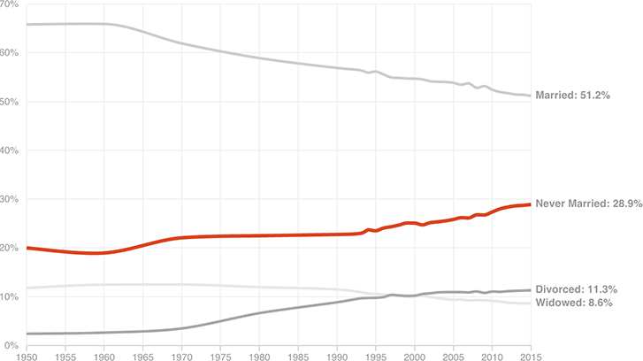

The share of American women who have never been married has climbed rapidly, from around 1 in 5 in 1950 to just under 1 in 3 today.

Notes
Only decennial census data available for 1950 through 1990. Annual data begins in 1993. Data from 1950 and 1960 are for women 14 and older. All other data are for women 15 and older.